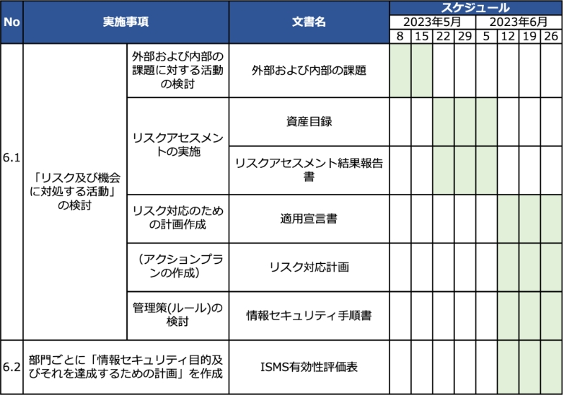

13-2-6. ISMS：8. 運用
「8. 運用」は、PDCAサイクルの「Do（実行）」に位置しており、「6. 計画」で計画した活動や、要求事項を満たすための活動を実施し、管理します。そして、計画通りに実施した証拠となる情報を文書化し、保持する必要があります。
8. 運用
作成ドキュメント（例）
8.1 運用の計画及び管理
「6. 計画」で計画した活動や、要求事項を満たすための活動の実施状況を管理するための一覧表を作成します。
ISMS年間計画表
8.2 情報セキュリティリスクアセスメント
「6. 計画」で定めたリスクアセスメントのプロセスを実施し、結果を文書化します。
リスクアセスメント結果報告書
8.3 情報セキュリティリスク対応
「6. 計画」で定めたリスク対応計画を実施し、結果を文書化します。
リスク対応計画
8.1 運用の計画及び管理
作成するドキュメント
ISMS年間計画表
「6. 計画で決定した活動」および「要求事項を満たすための活動」を実施するにあたり必要なプロセスを計画し、ISMS年間計画表を作成します。ISMS年間計画表は、「6. 計画で決定した活動」および「要求事項を満たすための活動」の実施状況を管理するための計画表のことです。
ISMS年間計画表の作成方法
以下の例は、「6. 計画」で決定した活動に関する計画表の例です。
- No：ISO/IEC 27001の要求事項の項番を記載します。
- 実施事項：行う活動の内容を記載します。
- 文書名：実施事項で記載した活動を行う際に利用したり、作成したりする文書名を記載します。
- スケジュール：実施事項を行う予定日を記載します。
8.2 情報セキュリティリスクアセスメント
追記するドキュメント
リスクアセスメント結果報告書
リスクアセスメントを実施する際は、結果を「リスクアセスメント結果報告書」に追記します。
リスクアセスメント結果報告書の追記方法
リスクアセスメント結果報告書の「対応」の箇所に記載します。
対応：管理策の実施状況を記載します。
- 管理策を実施した場合は「済み」
- 管理策を実施する予定がある場合は「予定」
- 管理策を実施する予定が未定の場合は「未定」
8.3 情報セキュリティリスク対応
追記するドキュメント
リスク対応計画
リスク対応を実施する際は、結果を「リスク対応計画」に追記します。
リスク対応計画の追記方法
リスク対応計画の「実績」、「ステータス」の箇所に記載します。
- 実績の開始の箇所：実際にタスクを開始した日付を記載します。
- 実績の終了の箇所：実際にタスクが完了した日付を記載します。
- ステータスの箇所：タスクの進捗状況を記載します。
- タスクが完了した場合は「終了」
- タスクを実行中の場合は「着手」
- タスクに着手していない場合は「未着手」